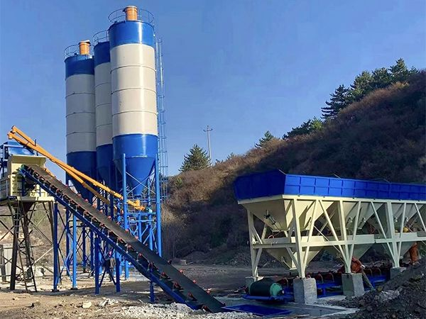

Бетонный завод 25 м³/ч для промышленного и коммерческого использования

HZS25 concrete batching plant
The HZS series concrete batching plant is a forced-type, high-efficiency equipment capable of producing various types of concrete including plastic concrete and dry-hard concrete. With high production efficiency, it is widely used in large and medium-scale building construction, road and bridge engineering, as well as precast concrete product manufacturing. It is the ideal equipment for commercial concrete production.
| Модель | HZS25 |
| Производитель | YUDA |
| Theoretical Производительность | 25 m³/h |
| Модель смесителя | JS500 Twin-Shaft Forced Mixer |
| Rated Feeding Производительность | 800L |
| Rated Discharging Производительность | 500L |
| Mixer Power | 18.5KW |
| Production Cycle | 50sec |
| Система управления | PLC Fully Automatic |
The mixing system adopts JS series twin-shaft forced mixer, featuring good concrete uniformity, short mixing time, long service life of wear parts, and convenient operation and maintenance.
Adopts the latest electronic weighing, microcomputer control, and digital display technologies. Electronic weighing system features buffer device and automatic compensation function for high measurement accuracy.
Advanced PLC control system enables fully automatic operation, reducing manual intervention. High-efficiency motors and optimized energy management system reduce energy consumption by 15%.
Sand and aggregate feeding system uses wide chevron belt conveyor with maintenance walkway, providing stable and reliable material supply for high-quality concrete production.
No middlemen. Competitive pricing with direct manufacturer support.
7+ countries served. We understand international project requirements.
Technical team available for on-site guidance and commissioning.
Lifetime spare parts supply. Fast response for urgent requirements.
Contact us for прямые поставки pricing and customized solution for your project.
Запросить цену